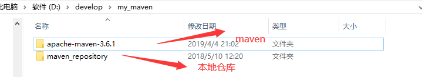
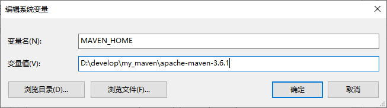
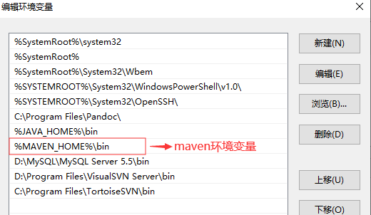
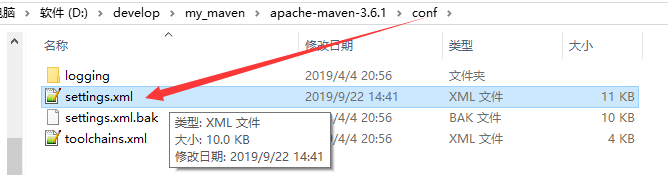
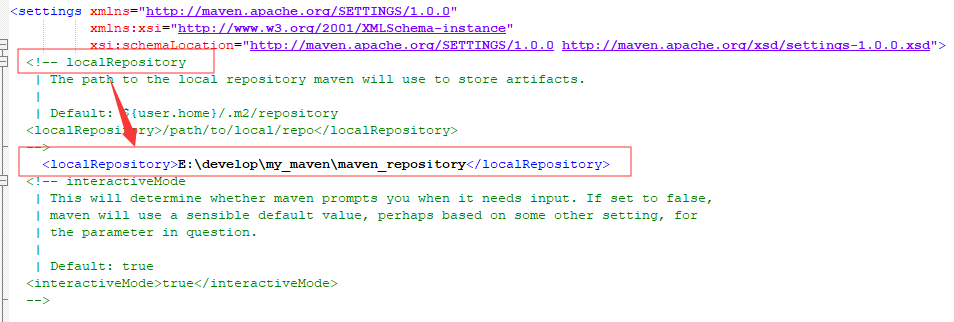
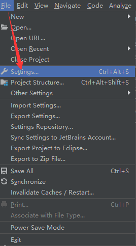
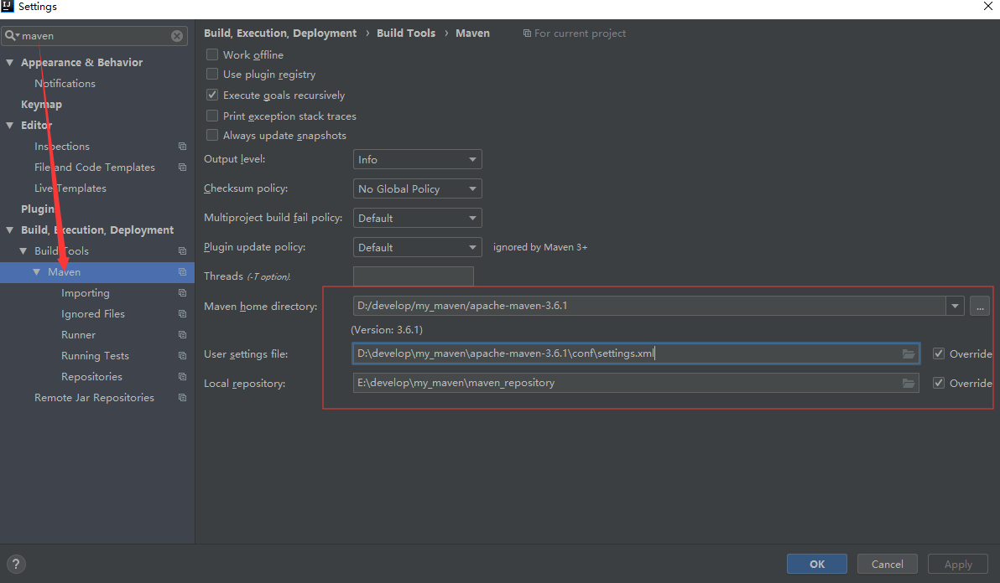
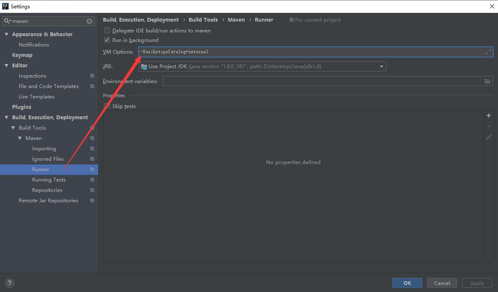
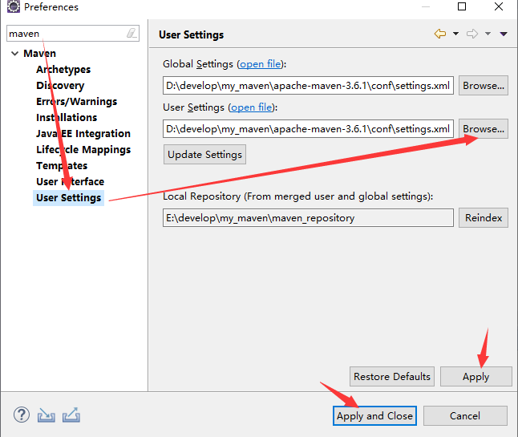

原文出处:本文由博客园博主寒水依蘅提供。
原文连接:https://www.cnblogs.com/chen-ws/p/11797518.html
原文连接:https://www.cnblogs.com/chen-ws/p/11797518.html
---恢复内容开始---
1.官网下载maven
官方网址：http://maven.aparche.org
2.将maven解压到硬盘（最好没有中文路径）下

3.配置maven环境变量


4.配置maven的settings.xml文件



远程仓库：该路径是国内阿里云的maven路径，下载速度较快
<mirror>
<id>alimaven</id>
<mirrorOf>central</mirrorOf>
<name>aliyun maven</name>
<url>http://maven.aliyun.com/nexus/content/repositories/central/</url>
</mirror>
5.idea中配置maven



6.eclipse中配置maven
打开window->preferences
